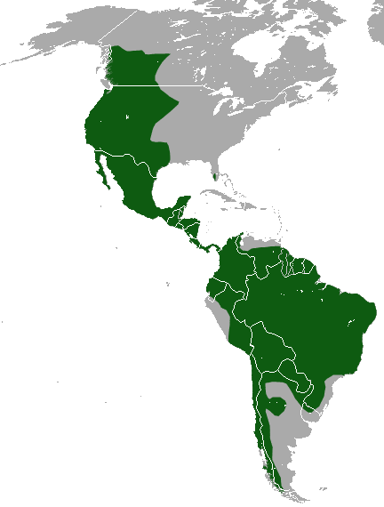
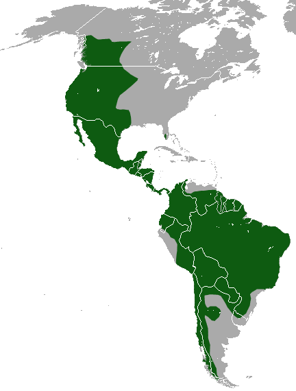

PUMA
El Puma mide entre 85 a 150 cm de largo (cabeza y cuerpo) más 45 a 85 cm de cola. Su peso va desde los 34 a 105 kg (excepcionalmente hasta 120 kg), siendo el macho más robusto que la hembra. Presenta una forma esbelta, cabeza ancha, con orejas redondeadas y cola larga, del mismo grosor en toda su longitud. En el adulto el pelaje es suave, corto y de color uniforme, mientras que en las crías presenta un moteado muy oscuro durante los 3 o 4 primeros meses de vida que va perdiéndose con la madurez. El color varía desde leonado rojizo hasta grisáceo o pardo oscuro, siendo más intenso en la frente y en la línea media del dorso. Tanto el tamaño como la coloración varían geográficamente; En Argentina los ejemplares de la Patagonia son más grandes, de pelaje más denso y de color grisáceo o leonado y hacia el norte son de menor tamaño y de coloración rojiza. Por lo general a medida que se alejan del Ecuador son de mayor tamaño.
HABITAT
Se adapta con facilidad tanto a las altas montañas, como a las áreas secas y desérticas o a la sabana. Lo importante para este felino es la presencia de venados en el hábitat, pues es su presa favorita. Se distribuye Desde el oeste de Canadá y de Estados Unidos de América, por todo México hasta la Patagonia. En países de América Central y del Sur tales como Belice, Costa Rica, El Salvador, Honduras, Guatemala, Nicaragua, Panamá, Argentina, Bolivia, Brasil, Chile, Colombia, Ecuador, Guyana, Paraguay, Perú, Surinam y Venezuela. La Subespecie Puma concolor coryi habita en Florida y los estados adyacentes del sureste de los Estados Unidos de Norteamérica; la Subespecie Puma concolor costaricensis se encuentra desde Costa Rica y la mitad sureste de Nicaragua hasta el sur de Panamá; la Subespecie Puma concolor cougar se encuentra en el este de los Estados Unidos de Norteamérica.
CAZA
El puma se alimenta de ovejas, ciervos, renos, conejos, liebres, mapaches, ardillas, castores, armadillos, coyotes, zorros, ratones o puercos espines. Para capturar a sus presas, el puma suele idear una emboscada previamente y avanza silenciosamente hacia la presa. Es entonces cuando salta en el momento justo y con sus garras inmoviliza a la presa mientras le muerde el cuello. Una vez abatida, el puma traslada su cuerpo a un lugar seguro para comerlo tranquilamente y esconde lo que sobra de otros animales para que dure más tiempo. Normalmente, suele cazar presas grandes cada 15 días, pero puede aumentar si hay cachorros que alimentar.